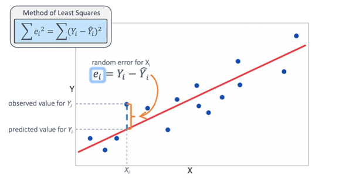
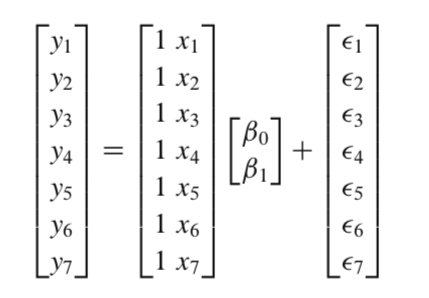

Linear Regression¶

The Model¶
where
\(y_i\) is the number of minutes user i spends on the site daily,
\(x_i\) is the number of friends user i has
\(\alpha\) is the constant when x = 0.
\(ε_i\) is a (hopefully small) error term representing the fact that there are other factors not accounted for by this simple model.
Least Squares Fit¶
最小二乘法
The constant could be represent by 1 in X
The squared error could be written as:
If we know \(\alpha\) and \(\beta\), then we can make predictions.
Since we know the actual output \(y_i\) we can compute the error for each pair.
Since the negative errors cancel out with the positive ones, we use squared errors.
The least squares solution is to choose the \(\alpha\) and \(\beta\) that make sum_of_squared_errors as small as possible.
均方误差的几何意义：欧式距离¶
最小二乘法就是试图找到一条直线，是所有样本到直线的欧氏距离之和最小。

%matplotlib inline
import matplotlib.pyplot as plt
import pandas as pd
import statsmodels.api as sm
import statsmodels.formula.api as smf
import matplotlib
matplotlib.style.use('fivethirtyeight')
matplotlib.style.available
['seaborn-dark',
'seaborn-darkgrid',
'seaborn-ticks',
'fivethirtyeight',
'seaborn-whitegrid',
'classic',
'_classic_test',
'fast',
'seaborn-talk',
'seaborn-dark-palette',
'seaborn-bright',
'seaborn-pastel',
'grayscale',
'seaborn-notebook',
'ggplot',
'seaborn-colorblind',
'seaborn-muted',
'seaborn',
'Solarize_Light2',
'seaborn-paper',
'bmh',
'tableau-colorblind10',
'seaborn-white',
'dark_background',
'seaborn-poster',
'seaborn-deep']
num_friends_good = [49,41,40,25,21,21,19,19,18,18,16,15,15,15,15,14,14,13,13,13,13,12,12,11,10,10,10,10,10,10,10,10,10,10,10,10,10,10,10,9,9,9,9,9,9,9,9,9,9,9,9,9,9,9,9,9,9,8,8,8,8,8,8,8,8,8,8,8,8,8,7,7,7,7,7,7,7,7,7,7,7,7,7,7,7,6,6,6,6,6,6,6,6,6,6,6,6,6,6,6,6,6,6,6,6,6,6,5,5,5,5,5,5,5,5,5,5,5,5,5,5,5,5,5,4,4,4,4,4,4,4,4,4,4,4,4,4,4,4,4,4,4,4,4,3,3,3,3,3,3,3,3,3,3,3,3,3,3,3,3,3,3,3,3,2,2,2,2,2,2,2,2,2,2,2,2,2,2,2,2,2,1,1,1,1,1,1,1,1,1,1,1,1,1,1,1,1,1,1,1,1,1,1]
daily_minutes_good = [68.77,51.25,52.08,38.36,44.54,57.13,51.4,41.42,31.22,34.76,54.01,38.79,47.59,49.1,27.66,41.03,36.73,48.65,28.12,46.62,35.57,32.98,35,26.07,23.77,39.73,40.57,31.65,31.21,36.32,20.45,21.93,26.02,27.34,23.49,46.94,30.5,33.8,24.23,21.4,27.94,32.24,40.57,25.07,19.42,22.39,18.42,46.96,23.72,26.41,26.97,36.76,40.32,35.02,29.47,30.2,31,38.11,38.18,36.31,21.03,30.86,36.07,28.66,29.08,37.28,15.28,24.17,22.31,30.17,25.53,19.85,35.37,44.6,17.23,13.47,26.33,35.02,32.09,24.81,19.33,28.77,24.26,31.98,25.73,24.86,16.28,34.51,15.23,39.72,40.8,26.06,35.76,34.76,16.13,44.04,18.03,19.65,32.62,35.59,39.43,14.18,35.24,40.13,41.82,35.45,36.07,43.67,24.61,20.9,21.9,18.79,27.61,27.21,26.61,29.77,20.59,27.53,13.82,33.2,25,33.1,36.65,18.63,14.87,22.2,36.81,25.53,24.62,26.25,18.21,28.08,19.42,29.79,32.8,35.99,28.32,27.79,35.88,29.06,36.28,14.1,36.63,37.49,26.9,18.58,38.48,24.48,18.95,33.55,14.24,29.04,32.51,25.63,22.22,19,32.73,15.16,13.9,27.2,32.01,29.27,33,13.74,20.42,27.32,18.23,35.35,28.48,9.08,24.62,20.12,35.26,19.92,31.02,16.49,12.16,30.7,31.22,34.65,13.13,27.51,33.2,31.57,14.1,33.42,17.44,10.12,24.42,9.82,23.39,30.93,15.03,21.67,31.09,33.29,22.61,26.89,23.48,8.38,27.81,32.35,23.84]
alpha, beta = 22.9475, 0.90386
plt.scatter(num_friends_good, daily_minutes_good)
plt.plot(num_friends_good, [alpha + beta*i for i in num_friends_good], 'b-')
plt.xlabel('# of friends', fontsize = 20)
plt.ylabel('minutes per day', fontsize = 20)
plt.title('linear regression', fontsize = 20)
plt.show()
Of course, we need a better way to figure out how well we’ve fit the data than staring at the graph.
A common measure is the coefficient of determination (or R-squared), which measures the fraction of the total variation in the dependent variable that is captured by the model.
The Matrix Method¶
The constant could be represent by 1 in X
The squared error could be written as:

We can also write this in matrix notation as \((y-Xw)^T(y-Xw)\).
If we take the derivative of this with respect to \(w\), we’ll get
We can set this to zero and solve for w to get the following equation:
# https://github.com/computational-class/machinelearninginaction/blob/master/Ch08/regression.py
import pandas as pd
import random
dat = pd.read_csv('../data/ex0.txt', sep = '\t', names = ['x1', 'x2', 'y'])
dat['x3'] = [yi*.3 + .5*random.random() for yi in dat['y']]
dat.head()
| x1 | x2 | y | x3 | |
|---|---|---|---|---|
| 0 | 1.0 | 0.067732 | 3.176513 | 1.432701 |
| 1 | 1.0 | 0.427810 | 3.816464 | 1.149538 |
| 2 | 1.0 | 0.995731 | 4.550095 | 1.638831 |
| 3 | 1.0 | 0.738336 | 4.256571 | 1.587099 |
| 4 | 1.0 | 0.981083 | 4.560815 | 1.840716 |
from numpy import mat, linalg, corrcoef
def standRegres(xArr,yArr):
xMat = mat(xArr); yMat = mat(yArr).T
xTx = xMat.T*xMat
if linalg.det(xTx) == 0.0:
print("This matrix is singular, cannot do inverse")
return
ws = xTx.I * (xMat.T*yMat)
return ws
xs = [[dat.x1[i], dat.x2[i], dat.x3[i]] for i in dat.index]
y = dat.y
print(xs[:2])
ws = standRegres(xs, y)
print(ws)
[[1.0, 0.067732, 1.4327013306690486], [1.0, 0.42781, 1.1495375558478735]]
[[2.92237739]
[1.65664071]
[0.07440558]]
xMat=mat(xs)
yMat=mat(y)
#yHat = xMat*ws
xCopy=xMat.copy()
xCopy.sort(0)
yHat=xCopy*ws
fig = plt.figure()
ax = fig.add_subplot(111)
ax.scatter(xMat[:,1].flatten().A[0], yMat.T[:,0].flatten().A[0])
ax.plot(xCopy[:,1],yHat, 'r-')
plt.ylim(0, 5)
plt.show()

yHat = xMat*ws
corrcoef(yHat.T, yMat)
array([[ 1. , 0.98666465],
[ 0.98666465, 1. ]])
Regression with Statsmodels¶
http://www.statsmodels.org/stable/index.html
statsmodels is a Python module that provides classes and functions for the estimation of many different statistical models, as well as for conducting statistical tests, and statistical data exploration.
dat = pd.read_csv('../data/ex0.txt', sep = '\t', names = ['x1', 'x2', 'y'])
dat['x3'] = [yi*.3 - .1*random.random() for yi in y]
dat.head()
| x1 | x2 | y | x3 | |
|---|---|---|---|---|
| 0 | 1.0 | 0.067732 | 3.176513 | 0.901243 |
| 1 | 1.0 | 0.427810 | 3.816464 | 1.114610 |
| 2 | 1.0 | 0.995731 | 4.550095 | 1.312534 |
| 3 | 1.0 | 0.738336 | 4.256571 | 1.266192 |
| 4 | 1.0 | 0.981083 | 4.560815 | 1.314824 |
results = smf.ols('y ~ x2 + x3', data=dat).fit()
results.summary()
| Dep. Variable: | y | R-squared: | 0.984 |
|---|---|---|---|
| Model: | OLS | Adj. R-squared: | 0.984 |
| Method: | Least Squares | F-statistic: | 6062. |
| Date: | Sun, 07 Jun 2020 | Prob (F-statistic): | 1.19e-177 |
| Time: | 08:56:46 | Log-Likelihood: | 267.56 |
| No. Observations: | 200 | AIC: | -529.1 |
| Df Residuals: | 197 | BIC: | -519.2 |
| Df Model: | 2 | ||
| Covariance Type: | nonrobust |
| coef | std err | t | P>|t| | [0.025 | 0.975] | |
|---|---|---|---|---|---|---|
| Intercept | 1.7243 | 0.111 | 15.508 | 0.000 | 1.505 | 1.944 |
| x2 | 0.9567 | 0.066 | 14.576 | 0.000 | 0.827 | 1.086 |
| x3 | 1.4967 | 0.129 | 11.579 | 0.000 | 1.242 | 1.752 |
| Omnibus: | 11.851 | Durbin-Watson: | 1.973 |
|---|---|---|---|
| Prob(Omnibus): | 0.003 | Jarque-Bera (JB): | 5.411 |
| Skew: | -0.143 | Prob(JB): | 0.0668 |
| Kurtosis: | 2.247 | Cond. No. | 63.4 |
Warnings:
[1] Standard Errors assume that the covariance matrix of the errors is correctly specified.
fig = plt.figure(figsize=(12,8))
fig = sm.graphics.plot_partregress_grid(results, fig = fig)
plt.show()
# regression
import numpy as np
X = np.array(num_friends_good)
X = sm.add_constant(X, prepend=False)
mod = sm.OLS(daily_minutes_good, X)
res = mod.fit()
print(res.summary())
OLS Regression Results
==============================================================================
Dep. Variable: y R-squared: 0.329
Model: OLS Adj. R-squared: 0.326
Method: Least Squares F-statistic: 98.60
Date: Sun, 07 Jun 2020 Prob (F-statistic): 3.68e-19
Time: 08:56:55 Log-Likelihood: -711.76
No. Observations: 203 AIC: 1428.
Df Residuals: 201 BIC: 1434.
Df Model: 1
Covariance Type: nonrobust
==============================================================================
coef std err t P>|t| [0.025 0.975]
------------------------------------------------------------------------------
x1 0.9039 0.091 9.930 0.000 0.724 1.083
const 22.9476 0.846 27.133 0.000 21.280 24.615
==============================================================================
Omnibus: 26.873 Durbin-Watson: 2.027
Prob(Omnibus): 0.000 Jarque-Bera (JB): 7.541
Skew: 0.004 Prob(JB): 0.0230
Kurtosis: 2.056 Cond. No. 13.9
==============================================================================
Warnings:
[1] Standard Errors assume that the covariance matrix of the errors is correctly specified.
fig = plt.figure(figsize=(12,6))
fig = sm.graphics.plot_partregress_grid(res, fig = fig)
plt.show()
Regression towards mediocrity¶
The concept of regression comes from genetics and was popularized by Sir Francis Galton during the late 19th century with the publication of Regression towards mediocrity in hereditary stature. Galton observed that extreme characteristics (e.g., height) in parents are not passed on completely to their offspring.
df = pd.read_csv('../data/galton.csv')
df['father_above_average'] = [i-df['father'].mean() for i in df['father']]
df['mother_above_average'] = [i-df['mother'].mean() for i in df['mother']]
df['height_more_than_father'] =df['height'] - df['father']
df['height_more_than_mother'] =df['height'] - df['mother']
df.head()
| family | father | mother | sex | height | nkids | father_above_average | mother_above_average | height_more_than_father | height_more_than_mother | |
|---|---|---|---|---|---|---|---|---|---|---|
| 0 | 1 | 78.5 | 67.0 | M | 73.2 | 4 | 9.267149 | 2.91559 | -5.3 | 6.2 |
| 1 | 1 | 78.5 | 67.0 | F | 69.2 | 4 | 9.267149 | 2.91559 | -9.3 | 2.2 |
| 2 | 1 | 78.5 | 67.0 | F | 69.0 | 4 | 9.267149 | 2.91559 | -9.5 | 2.0 |
| 3 | 1 | 78.5 | 67.0 | F | 69.0 | 4 | 9.267149 | 2.91559 | -9.5 | 2.0 |
| 4 | 2 | 75.5 | 66.5 | M | 73.5 | 4 | 6.267149 | 2.41559 | -2.0 | 7.0 |
import seaborn as sns
sns.set(font_scale=1.5)
g = sns.PairGrid(df, y_vars=["height"], x_vars=["father", "mother"], hue="sex", height=4)
g.map(sns.regplot)
g.add_legend();
g = sns.PairGrid(df, y_vars=["height_more_than_father", "height_more_than_mother"],
x_vars=["father_above_average", "mother_above_average"], hue="sex", height=4)
g .map(sns.regplot)
g.add_legend();
results = smf.ols('height ~ father + mother + C(sex) + nkids', data=df).fit()
print(results.summary())
OLS Regression Results
==============================================================================
Dep. Variable: height R-squared: 0.641
Model: OLS Adj. R-squared: 0.639
Method: Least Squares F-statistic: 398.1
Date: Sun, 07 Jun 2020 Prob (F-statistic): 9.09e-197
Time: 11:04:16 Log-Likelihood: -1960.1
No. Observations: 898 AIC: 3930.
Df Residuals: 893 BIC: 3954.
Df Model: 4
Covariance Type: nonrobust
===============================================================================
coef std err t P>|t| [0.025 0.975]
-------------------------------------------------------------------------------
Intercept 16.1877 2.794 5.794 0.000 10.704 21.671
C(sex)[T.M] 5.2099 0.144 36.125 0.000 4.927 5.493
father 0.3983 0.030 13.472 0.000 0.340 0.456
mother 0.3210 0.031 10.269 0.000 0.260 0.382
nkids -0.0438 0.027 -1.612 0.107 -0.097 0.010
==============================================================================
Omnibus: 12.177 Durbin-Watson: 1.566
Prob(Omnibus): 0.002 Jarque-Bera (JB): 16.265
Skew: -0.149 Prob(JB): 0.000294
Kurtosis: 3.588 Cond. No. 3.68e+03
==============================================================================
Warnings:
[1] Standard Errors assume that the covariance matrix of the errors is correctly specified.
[2] The condition number is large, 3.68e+03. This might indicate that there are
strong multicollinearity or other numerical problems.
results2 = smf.ols('height_more_than_father ~ father_above_average + mother_above_average + C(sex) + nkids', data=df).fit()
print(results2.summary())
OLS Regression Results
===================================================================================
Dep. Variable: height_more_than_father R-squared: 0.672
Model: OLS Adj. R-squared: 0.671
Method: Least Squares F-statistic: 457.6
Date: Sun, 07 Jun 2020 Prob (F-statistic): 1.84e-214
Time: 11:04:21 Log-Likelihood: -1960.1
No. Observations: 898 AIC: 3930.
Df Residuals: 893 BIC: 3954.
Df Model: 4
Covariance Type: nonrobust
========================================================================================
coef std err t P>|t| [0.025 0.975]
----------------------------------------------------------------------------------------
Intercept -4.9011 0.201 -24.426 0.000 -5.295 -4.507
C(sex)[T.M] 5.2099 0.144 36.125 0.000 4.927 5.493
father_above_average -0.6017 0.030 -20.351 0.000 -0.660 -0.544
mother_above_average 0.3210 0.031 10.269 0.000 0.260 0.382
nkids -0.0438 0.027 -1.612 0.107 -0.097 0.010
==============================================================================
Omnibus: 12.177 Durbin-Watson: 1.566
Prob(Omnibus): 0.002 Jarque-Bera (JB): 16.265
Skew: -0.149 Prob(JB): 0.000294
Kurtosis: 3.588 Cond. No. 20.4
==============================================================================
Warnings:
[1] Standard Errors assume that the covariance matrix of the errors is correctly specified.
fig = plt.figure(figsize=(8,8))
fig = sm.graphics.plot_partregress_grid(results, fig = fig)
plt.show()
fig = plt.figure(figsize=(12,12))
fig = sm.graphics.plot_partregress_grid(results2, fig = fig)
plt.show()